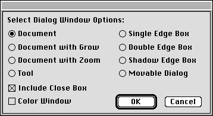
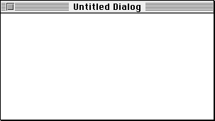
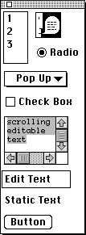
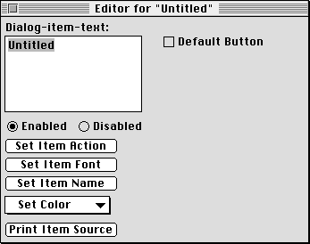
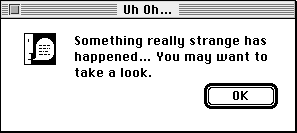
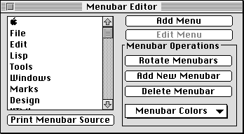
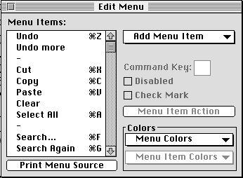
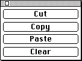

Графические интерфейсы пользователя (GUI) изменили способ использования компьютеров людьми. Высококлассные Лисп-системы имели сложные (GUI) еще в конце 1970-х годов, а недорогие потребительские компьютеры приняли (GUI) в 1984 году. Современные системы Lisp включают в себя инструменты для построения GUI с использованием как специфичных для платформы, так и независимых от платформы методов. Первые могут воспользоваться собственными возможностями пользовательского интерфейса платформы, в то время как вторые обеспечивают абстракцию, которая переносится через несколько платформ.
Events(События)-это ключ к работе всех GUI. Событие - это жест, инициируемый пользователем: как правило, нажатие клавиши, движение мыши или щелчок, выбор меню, росчерк пера или произнесение речи. Событие может произойти в любой момент. Это означает, что программа должна быть подготовлена к тому, чтобы в любое время каким-то осмысленным образом обрабатывать любое событие. Интерпретация события будет зависеть от текущего состояния программы, например, какие окна видны на экране и что отображается в каждом окне. Событие может изменить состояние программы и, следовательно, повлиять на интерпретацию последующих событий. Но во всех случаях программа должна быть готова обрабатывать поступление любого события в любое время.
Управляемые событиями программы имеют структуру управления, известную как цикл событий(event loop). Цикл событий получает события и отправляет их в некоторую часть программы, обычно ту часть программы, которая управляет текущим фокусом(focus) или участком, представляющим интерес для пользователя, среди всей информации, отображаемой в данный момент программой.
Следующая, и более очевидная, характеристика графических пользовательских интерфейсов заключается в том, что они полностью полагаются на графику. Даже текст отображается в виде графического изображения. Конечно, для каждого программиста было бы невероятно болезненно (и глупо) писать программы для визуализации текста, линий, кругов, полей, меню, элементов управления и т. д. Операционная система предоставляет набор библиотечных процедур для рисования графических объектов, окон и элементов управления; среда Lisp обычно предоставляет оболочки (часто с помощью интерфейса внешних функций Lisp) вокруг графических подпрограмм, так что они могут быть вызваны из Lisp.
Доступность и детали реализации графических подпрограмм широко варьируются от платформы к платформе. Вы должны ознакомиться с документацией для вашей реализации Lisp, чтобы узнать о том, как она поддерживает графику.
Macintosh Common Lisp (MCL) предоставляет доступ к базовому графическому инструментарию ОС Macintosh двумя способами. MCL предоставляет высокоуровневый интерфейс для представления окон, меню, элементов управления, текста и графики. Этот интерфейс находится на более высоком уровне абстракции, чем базовые примитивы ОС; он отделяет программиста от проблем выделения памяти, компоновки записей и указателей. MCL также предоставляет низкоуровневый интерфейс, который позволяет программировать с базовыми процедурами ОС (не только для графики, но и для всей ОС). Когда вы используете низкоуровневый интерфейс, вы сталкиваетесь со всеми проблемами, которые преследуют программиста C или Pascal - только синтаксис отличается.
В дополнение к интерфейсам программиста к ОС Macintosh, MCL также предоставляет инструмент для визуального построения элементов пользовательского интерфейса. Инструментарий интерфейса позволяет создавать окна и диалоговые окна, просто указывая определенный тип нового окна, а затем сбрасывая в него элементы пользовательского интерфейса. Инструментарий интерфейса также предоставляет редактор для меню. Когда вы будете удовлетворены внешним видом вашего нового окна или меню, инструментарий интерфейса выдаст код Lisp, необходимый для восстановления его с нуля.
Инструментарий интерфейса MCL позволяет создавать диалоговые окна и меню. Чтобы создать диалоговое окно, сначала выберите стиль окна.

Здесь я решил создать простое окно документа.

Рядом с новым окном появится палитра элементов управления. Из этой палитры можно перетаскивать элементы управления для создания нужного макета окна.

Каждый элемент управления, перетаскиваемый в окно, можно перемещать и изменять его размер. Вы также можете редактировать атрибуты элемента управления, как показано здесь для элемента управления button.

Меньше чем через минуту я закончил этот простой диалог. Теперь я могу использовать команду меню для сброса исходного текста Lisp, который воссоздаст этот диалог.

Инструментарий интерфейса также позволяет создавать и редактировать строки меню, Меню и пункты меню. Вы начинаете с редактора строки меню.

Здесь я решил отредактировать меню редактирования MCL

При редактировании меню вы можете не иметь доступа к меню редактирования и его командам (Cut)вырезать, (Copy)копировать, (Paste)вставить и (Clear)очистить. MCL предоставляет палитру с этими элементами управления во время редактирования меню.

Независимый от платформы интерфейс абстрагирует детали графического интерфейса базовой операционной системы, предоставляя свой собственный цикл событий, окна, меню и элементы управления. Когда вы пишете графический интерфейс, используя эти абстракции, код может быть перемещен на любую другую платформу Lisp (при условии наличия независимого от платформы интерфейса) путем перекомпиляции.
CLIM - это коммерчески поддерживаемый независимый от платформы пользовательский интерфейс, доступный на всех платформах Lisp. CLIM 2.0 даже сохраняет собственный внешний вид каждой платформы, сопоставляя независимые от платформы запросы для окон, меню и элементов управления с вызовами графических служб собственной ОС.
Garnet-это бесплатный, неподдерживающий независимость от платформы пользовательский интерфейс, доступный для большинства платформ Lisp. Исходный код находится в свободном доступе, поэтому вы можете перенести Garnet на новую платформу, если вам так хочется. В отличие от CLIM 2.0, Garnet использует свои собственные определения для окон, меню и элементов управления; это означает, что графический интерфейс Garnet будет выглядеть одинаково независимо от платформы.